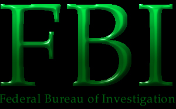

Yes, it is us, the Federal Bureau of Investigation. You all thought that we were a Federal Agency. You thought wrong. We are actually a group of elite hackers. We had you all fooled. You stupid Americans. You should learn to be more aware of this kind of shit. Sure, most of us are gay, but I don't judge my fellow FBI hackers by their cover.
As for gH, we will own you all. We already locked up most of your members. There aren't too many left. p0gO, I know you are elite and all, but you are next. You really want to know who hacked www.whitehouse.gov? Look at our skill:
[jscott@fbi.gov ~]$ telnet www.whitehouse.gov
Trying 198.137.240.91...
Connected to www.whitehouse.gov.
Escape character is '^]'.
login: root
Password:
[root@www ~]# cd /usr/local/www
[root@www /usr/local/www]# mv index.html index2.html
[root@www /usr/local/www]# mv /tmp/site/* .
[root@www /usr/local/www]# exit
Connection closed by foreign host.
[jscott@fbi.gov ~]$Bahahaha. WE HACKED THE WHITEHOUSE! We just thought we would cover our asses and blame it on hackers. That is the best cover in the world. There are my *.gov sites to be owned...soon.
©1999 FBI